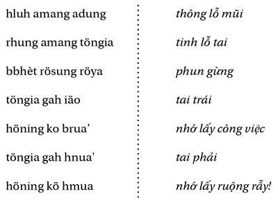

Chương 6
Chúng ta đã biết Mẹ Rú [ Ya’ pum ], bây giờ là một bà già rừng “khác”, Ding-Dung [ Ya’ ding dung, từ kép gợi lên ý lúc lắc, đong đưa, còn ya’ luôn là từ dùng để kêu và gọi những người đàn bà cỡ tuổi bà nội]:
Mẹ Ding-Dung và thằng cháu Drit của Mẹ rất nghèo. Một người con trai của Trời đội lốt rất xấu xuống trần - Cậu ta đến nhà lãnh chúa, xin nước uống - Lãnh chúa không cho; khắp làng, chẳng ai cho cậu uống nước cả - Cuối cùng, cậu đến nhà Mẹ Ding-Dung; Mẹ mời cậu vào - “Cháu không dám, trông cháu dị dợm quá! - Chính ta cũng dị dợm và cháu ta cũng chẳng hơn gì cháu!”- Cậu sống cùng hai bà cháu - Cậu xin chăn trâu cho lãnh chúa và cuối cùng cưới con gái của lãnh chúa (Hj. 14a).
Dị bản của cùng một chủ đề (bởi không thể biết cái nào là dị bản của cái nào), bản văn tiếp sau đây có lẽ đáng chú ý hơn, tuy bản trước vẫn có ích:
Mẹ Ding-Dung sống với đứa cháu gái là Hlui’, cả hai thật khốn cùng. Ông Trời nhìn xuống; thấy thương tâm quá, ông bỏ đi nằm và chẳng muốn ăn uống gì nữa. Rồi ông quyết định phái cậu con trai của ông xuống trần để giúp hai người đàn bà kia thoát khỏi cảnh khốn cùng - Cậu con Trời đến nhà bà già; bà phải túm chặt chiếc váy rách bươm lại để tiếp cậu - Cậu xin cưới Hlui’; cô nửa xấu hổ nửa ham muốn, cuối cùng cô ưng thuận - Cậu sống với cô, mang đến cho cô mọi sự giàu sang, cho cô một đứa con, rồi trở về trời - Cô buồn, chẳng ăn uống gì nữa, cuối cùng chấp nhận người bạn trai mà cậu con Trời đã trao cho cô trước khi ra đi (Hj. 14b).
Một dị bản khác kể như sau:
Ông Trời có hai cậu con trai. Ông nhìn thấy bà già Dung [dôn dung, dôn: ông cố, bà cố, là bậc trên ông bà nữa] cùng với đứa cháu của bà là Hlui’ ở dưới trần nghèo đến nỗi ông bảo cậu con cả phải cứu họ khỏi cảnh khốn cùng; cậu ta từ chối, ghê tởm cái cảnh nghèo khốn quá đỗi đó; Trời bèn bảo cậu con thứ đi, cậu vâng lời. Cậu biến thành quạ, bay xuống trần; thoạt tiên, cậu vào nhà lãnh chúa, lúc này mang dạng người khiến con gái lãnh chúa mê cậu, cậu cũng ngã lòng - Họ cưới nhau, quên bẵng mất hai người đàn bà nghèo khốn - Trên kia, Trời nhìn thấy họ, giáng bão tố xuống trừng phạt họ, tàn phá mọi thứ - Cậu con Trời hiểu ra, bèn rời bỏ vợ con, trở lại nhà bà già Dung, bà tiếp cậu, bảo: “Cháu vào nhà đi, bà sống có mỗi mình!” - đêm đến; Hlui’ ngủ chung với bà - Cậu nhìn thấy, cậu bế lấy Hlui’ trên tay và để nàng nằm cùng cậu - Sáng ra: “Bà ơi, bà bảo chẳng còn có ai ở nhà bà; vậy mà cháu gái bà lại ngủ với con đêm qua! - Nếu cháu muốn, hãy cưới nó đi!” Cậu làm ra nhà cửa, rẫy ruộng, đầy tớ cho nàng Hlui’, chỉ bằng cách đập xuống đất; hai cô con gái thật đẹp từ dưới đất chui lên, phục vụ cho họ, cậu đuổi họ đi - Sau nhiều năm, cậu quyết định trở về trời; thế là Hlui’ và bà già phơi mình dưới nắng cho chết khô - Ông Trời ra lệnh cho cậu con trai phải chữa lại tình cảnh ấy; cậu con trai trở xuống trần, đánh tên lãnh chúa và gia nhân của y, bắt chúng làm nô lệ cho Hlui’: cậu ta tìm được một người để ở lại với nàng, chăm sóc cho nàng (Hj. 13).
Ba dị bản này cho phép ta thiết lập những tương đồng, những hoàn cảnh và những nhân vật; không chỉ giữa Drit [mồ côi, bị bỏ rơi], Hlui’ [út chót, bị bỏ rơi], có thể thay thế được cho nhau bằng cách đổi giống. Vị khách nhà trời, con trai của Trời hay cô gái-rừng thiên thần, thường dùng vẻ bề ngoài của mình để thử thách lòng người, sau khi đã cứu giúp con người rồi thì thường không ở lại với họ nữa; Cậu (hay cô) ấy chỉ là đối tượng của một giấc mơ, giấc mơ của một xã hội (của dân tộc bé nhỏ) Giarai, mà Drit hay Hlui’ là đại diện, giấc mơ sẽ tan biến đi khi thức dậy. Các hoàn cảnh ấy cho phép ta lập bảng sau:

Ở giữa lại có thể sắp xếp như sau:

Chung quanh Mẹ Rú và Drit, là hai nhân vật không thay đổi, có cả một hệ thống những mối quan hệ, theo mọi hướng có thể (được biểu hiện bằng các mũi tên), bổ túc theo sơ đồ sau đây:

Đôi bà cháu ( töco , con trai hay con gái) là trung tâm và liên tục. Vậy bà già ấy, dưới nhiều tên gọi khác nhau là ai vậy? Ya’ Pum, Mẹ Rú, cũng thường được người Mdhur (một phân nhóm Giarai ở phía đông nam) gọi là Dôn Dung (hay Ding Dung), người Kreng (một phân nhóm Giarai ở phía tây nam) gọi là Dôn Sun, người Êđê gọi là Adôn Sun I Rit, đôi khi là Dôn Drit, hay Ya’ Dung Dai. Ya’ là “bà”, tương đương với dôn (hay adôn ), “cố” (cả nam và nữ); đấy vẫn là một tính cách ấy trong huyền thoại. Trong dãy hệ biến hóa ấy, cần đặc biệt chú ý đến tên Dung Dai.
Dung dai
có thể có nghĩa là “đung đưa”; nó kéo vần với
tai tösau
(vú dài) và trong ký ức Giarai không thể không gợi lên ý đó.
Dung dai to tösau
hợp thành một cụm từ mang nghĩa, thường nghe thấy trong các lời khấn
yang
dlong, những vị thần ở trên cao, hay
yang
ayuh, các thần sinh khí:

Chú thích ngôn ngữ học: Du và Dai (hay Dei) làm thành một tiếng đôi chỉ tên người để chỉ Adei, Ông Trời, mà chúng ta biết, vị thần tối cao và duy nhất... duy nhất nhưng cặp đôi với một bà vợ (“thần” của người Giarai chỉ có thể là giống đực, đó là một cặp thần linh) được gọi là ami’ Dung Dai, hay ya’ Dung Dai, hoặc nữa Dung ba Dai ( ami ’, mẹ, ở đây là tương đương của ya ’ hay bba đối người Giarai-Trung phía nam). Du/Dai song song với Dung/Dai, Trời và vợ ông ta - trong huyền thoại, bà thường bảo trợ những người anh hùng sử thi.
Nếu ta còn biết rằng Ya’ Pum và Drit cũng được cầu khấn chung trong nhiều lời khấn nghi lễ và, cũng trong ngữ cảnh đó, các thần rừng được gọi là yang Pum dlei (người ghi chép truyện này đã viết hoa từ Pum, hẳn là anh ta nghĩ đến tên thật của Mẹ Rú), thì rõ ràng là tư duy Giarai liên kết, nếu không phải là đồng nhất, Mẹ Rú, bà già rừng của chúng ta, với người vợ của Trời, Adei , và với các thần khác.
So sánh các chức năng trong các truyện kể khác nhau, chúng ta có thể nhận thấy:
- Chức năng hồi sinh nhân vật đã chết (bằng cách nấu lên hay những cách khác): Mẹ Rú được đặt song song với những yêu cái nhập nhằng (xem Hj. 16) hay với các cô gái rừng, như Tlaktlo, hay với chính ông Trời (Adei, Hj. 49); chức năng đón tiếp nữ nhân (hay nam nhân vật): Mẹ Rú đóng vai trò giống như Bà Sơn trong Hj. 110, bà này “là” một cái cây.
Trước khi kể câu chuyện về một bà-cây, tôi xin lưu ý rằng tất cả các bà Pum, Dung hay Dai (vốn chỉ là một) không mang tên đàn bà (trong tiếng Giarai tên đàn bà luôn luôn bắt dầu bằng chữ H) mà chỉ là những danh từ “chung”, đôi khi gắn với thảo mộc, chỉ có thêm từ “mẹ” hay “bà” vào trước thôi; tôi sẽ còn phải trở lại với tính cách ít chất giới tính của bà già này, không bao giờ tách rời khỏi Drit.

Một người đàn bà đi hái mầm cây trong rừng để nấu ăn. Dại dột nàng khấn người đàn ông nào giúp nàng hái được những mầm cây ở trên cao thì nàng sẽ lấy làm chồng - Nàng dẫn người đàn ông ấy về nhà, người đàn ông này có thể mang lốt trâu - Anh ta mời nàng về thăm nhà anh ta; dọc đường họ nhìn thấy dấu chân hổ, nàng sợ; anh ta nói: “Đừng sợ gì cả, đấy là dấu chân của bác anh đấy!”- Đến trước một tảng đá lớn, anh bảo nàng: “Em hãy đứng chờ đây, anh phải đi báo cho bố mẹ anh có em đến!” Trên một cành tre cao, có con chồn hương gọi nàng: “Đừng có đứng đấy! Chồng nàng đi gọi bố mẹ để ăn thịt nàng đấy; họ là hổ mà!” - Chồn hương giúp nàng leo lên cây; trên ấy có một ngôi nhà; nàng được đón tiếp, mời ăn - Chồn hương dọn một đĩa xôi to với cá - Bọn hổ đến; Chồn hương ném cơm có tẩm thuốc độc xuống cho chúng; chúng chết hết - Rồi Chồn hương đưa nàng về nhà nàng... cuối cùng Chồn hương biến mất (Hs. 80).
Tôi đã tóm tắt huyền thoại Sre trên để đặt vào không khí của câu chuyện Tokbok Giarai kỳ lạ và một lần nữa lưu ý đến sự gần gũi về văn hóa, sự tương đồng trong cõi mơ tưởng giữa những người Nam Á và Đa Đảo.
Có hai chị em. Cô chị đi chặt củi để đun, cùng với các bạn - Chiếc rìu của cô chị mắc vào một thân gỗ cứng, các bạn cô ra về: “Đây là rừng có dã thú, đừng có mà chờ ở đây!” - Cô chị cầu khấn: “Có cô gái nào giúp ta, ta sẽ kết làm bạn; chàng trai nào giúp ta, ta sẽ lấy làm chồng!” - Một người đàn ông xuất hiện, anh ta gỡ được chiếc rìu ra: Cô chị giữ lời giao ước, đưa anh ta về nhà - Rồi anh ta rủ cô đi thăm cha mẹ anh; họ đi vào rừng sâu - Dọc đường cô nhìn thấy những dấu chân voi to tướng, cô sợ; anh ta nói: “Đấy là dấu cái rổ của tổ tiên ta” - Họ dừng lại trước một cây to đổ nghiêng - “Chờ anh ở đây, anh đi gọi cha mẹ ra đón em!” - Cô chờ; từ trên cây đa, cô nghe có tiếng hát: “Phích, phích cô, phích, phích ca”; cô rủa cây đa. Cây đa cảnh báo cô: “Cô bé ơi, chồng cô là một con voi đấy, nó đang đi tìm cha mẹ để xé xác cô! - Bà ơi, bà giấu con đi! - Ta không thèm, đi mà nấp một mình trong lùm tre ấy!” - Bọn voi kéo đến, tìm thấy cô chị trong một lùm tre, chúng cùng nhau ăn thịt cô.
Anh “chồng” voi còn muốn dụ cả cô em nữa; anh ta đến nhà cô, rủ cô đi gặp chị, chị đang có việc cần cô - Chẳng hề nghi ngờ, cô em đi theo “anh rể” - Trong rừng, cô trông thấy những dấu chân voi, anh ta trấn an cô - Đến trước cây đa, anh ta bảo cô chờ, anh đi tìm cha mẹ - Cô em nghe cây đa hát: “Phích, phích cô...” - “Ôi tiếng chim hót hay quá, nó là bạn của ta, khi ta một mình trong rừng hoang! Chim ơi, hót nữa đi!” - Lúc đó Cây đa mới lên tiếng: “Ta thương hại thân con bé nhỏ; anh rể con là một con voi đấy, nó sẽ kéo cả bầy đến ăn thịt con, như đã ăn thịt chị con!” “Bà ơi, giấu con với!” Cây đa buông chùm rễ của nó xuống, cô em bám theo đó mà leo lên, nàng được giấu trong cây đa - Bọn voi đến; chúng đòi uống. Cây đa cho chúng uống thuốc độc - Bọn voi chết hết - Cô em nhớ cha mẹ; cây đa gọi chim đưa nàng về; thoạt tiên là Quạ và Cò bạch, chúng thoái thác; rồi đến Sáo và Gõ kiến, nhận đưa cô em về đến tận nhà; các sứ giả trung thành này trở về bên Cây đa, Cây đa cho Gõ kiến ăn sâu, còn Sáo thì ăn quả sung (Hj. 30).
Có rất nhiều điều để nói về thiên huyền thoại thật phong phú này. Tôi bỏ qua sự đối lập kinh điển chị cả/em gái, mà em gái thì bao giờ cũng hơn chị, không phải là đặc trưng riêng của Giarai và ta có thể tìm thấy trong nhiều nền văn hóa khác (bắt đầu bằng Kinh Thánh); có thể đây là một trong những điểm văn hóa phổ quát, cho phép chúng ta có thể hiểu nhau qua hàng chục nghìn cây số cách biệt. Có lẽ hay hơn là khai thác phía các con chim. Ngoài việc tiếng nói của người đàn bà-cây nghe như tiếng chim hót (vả, trên thực tế bà cũng là chúa tể trên không), về chức năng của loài có cánh cần ghi nhận: đối lập với cặp tanh hôi quạ/cò bạch là cặp gõ kiến/sáo, cũng là loài ăn vật sống, cũng như Cô chị (bị kết án tử) đối lập với Cô em (số được sống). Nhưng chúng ta có thể đi xa hơn trong việc nghiên cứu các chức năng môi giới.
Anh chồng-voi muốn đóng vai trò môi giới giữa Cô chị và Cô em, cũng giống như anh ta là môi giới giữa thế giới rừng với thế giới người; nhưng đấy chỉ là một ảo tưởng. Giữa loài thú trên không và loài thú dưới mặt đất, giữa người, thú vật và thảo mộc, người môi giới trọn vẹn duy nhất là Ya’ Tok Bok, bà tiên cây đa, qua lời nói và qua tình cảm của bà mang tính người như một người mẹ, là cây như tên gọi của bà và hót như một con chim - ngoài ra bà muốn làm gì với bọn thú lớn thì làm. Thông hiểu mọi sự, bà cảnh báo cho các cô gái; mỗi cô phải chịu lấy trách nhiệm phần mình. Bà sở hữu sự hiểu biết và bà còn hơn là người khai tâm nữa, bà cảm nghiệm và người ta muốn làm gì là tùy; cắm rễ sâu một chỗ, bà không di chuyển, mọi thứ chuyển động quanh bà. Việc bà là cây đa càng có ý nghĩa hơn: cây đa một mặt là biểu tượng của phồn nhiêu, mặt khác lại là biểu tượng của sự liên tục, trường tồn; những cây sung khổng lồ trong rừng được coi là bất tử, là hình ảnh của các thế hệ kế tục không dứt của một dòng mẫu hệ chung. Còn rõ ràng hơn cây baobap của những trảng cỏ châu Phi, cây đa hiển lộ căn tính của nó: một cây-rễ. Một con chim (tất cả các loài ăn cỏ đều hám quả sung) nhả một cái hạt trên một nhánh cây khác; từ đó một cây con nảy ra theo lối biểu sinh, tỏa các rễ trên không của nó ra siết chặt lấy cành cây đỡ (từ đó mà có tên “cây sung bóp cổ”), các rễ cây cắm xuống đất, phình to lên; cây đa tọa lạc, giữa trời và đất, một tòa lâu đài rễ. Phải đi một năm mới giáp vòng thân cây, một tháng mới leo ra hết một cành; mỗi chiếc lá dài bằng một tầm chim bay.
Trong bản kể của người Êđê (tộc người ở phía nam người Giarai) về huyền thoại đa đảo Đam San, người anh hùng chiến binh muốn đốn cây đa. Người nhà can ngăn: cái cây này, chẳng thấy thân, cũng chẳng thấy ngọn, hẳn là cây thần; đấy là cây khai sinh và bảo trợ gia đình Hni, cô này đã được hứa hôn cho Đam San. Hni van nài Đam San tôn trọng cây. Đam San chặt cây; cây sắp đổ. Hni chạy trốn; cô chạy hướng nào, cây cũng ngã theo. Hni chạy về đến nhà, váy áo tuột hết, ngã xuống chết, cùng lúc cây vừa đổ (theo L. Sabatier, “La chanson de Damsan” (Trường ca Đam San), BEFEO , 1933, tr. 256-261 - tôi đã chữa lại bản dịch: phun “thân” và ê’duk “ngọn” đã được Sabatier dịch là “mầm” và “nhánh”, chính Sabatier cũng thú nhận là ông không xác định được loại cây này và không biết hình dáng nó ra sao). Trong tất cả các tộc người Đông Dương, cây đa lớn đều được tôn kính; nhất là các tộc người Nam Đảo coi cây-rễ là cây nữ tiêu biểu, người đàn ông bắt rễ từ người đàn bà.
Giữa bà Tok Bok và bà già Pum có thể dễ dàng nhận ra mối dây liên hệ. Tok bok (tên riêng để gọi cây) cũng có thể đọc là tak bok, tak có nghĩa là “nhựa” và thường dùng để thay lak “sơn”; bà Sơn trong Hj. 110 rất có thể là một người đàn bà-đa, và ta biết bà là cái bóng của Mẹ Rú. Hơn nữa, cái nhìn dân gian Giarai trong trăng rằm có Mẹ Rú và cây đa của Mẹ. Chỉ có một bà già-rừng thôi, đó là mẹ của người Giarai.
Nguyên lý thiêng liêng về sự sinh sản ở đâu cũng mang tính nữ, điều ấy chẳng có gì đáng ngạc nhiên; nhưng Cây Sự Sống có phải là đàn bà không? Về đề tài này, theo các huyền thoại Sibérie, thần cây phong là một người đàn bà đứng tuổi, đôi khi hiện ra với những kẻ sùng bái bà, bán thân nhô ra khỏi chùm rễ hay từ thân cây; dáng trang trọng, tóc dài buông xõa, ngực trần, vú căng (xem R.G. Wasson, Soma, pine mushroom of immortalilty (Soma, nấm thiêng tạo nên sự bất tử), A Harvest- Special, New York, 1968, tr. 214). Cây Sự Sống cũng là Cây Hiểu Biết, dù hai chuyện kể trong sách Sáng Thế có nhân đôi lên; và nàng Eva trần truồng thật sự là người khai tâm. Không cần giả thiết một tính cách lưỡng tính khởi nguyên, trong khi theo dõi lịch sử các truyền thống của nhân loại, dường như nguyên lý của sự sinh sản, gắn liền với mặt trăng, đã được quan niệm như là chỉ ở phía nữ mà thôi (và sự sinh sản đã được chứng thực ở loài thảo mộc), giống đực chẳng có ý nghĩa gì lắm, thụ động, hay phụ thuộc thôi (Xem C.O. Sauer, Seeds, Spades, Hearths, and Herds. The Domesticatin of Animals and Foodstuffs (Ngũ cốc, Súng đạn, Lò lửa và Vật nuôi. Thuần dưỡng Động vật và Cây thực phẩm), The MIT Press, Cambridge (Mas.), 1969, tr. 88). Trên cơ sở đó và theo cùng một đường hướng ấy, phải chăng người đàn bà là nguồn gốc của sự thuần hóa các loài thảo mộc, động vật... và con người? Đương nhiên, đây không phải là chuyện Lịch sử (tiến hóa hay không tiến hóa), mà là cái các dân tộc đã tưởng tượng về các hiện tượng ấy. Ở mức độ này, thì những Pum và Tok Bok, vô tính như cỏ cây, được coi như là nguyên lý của sự sinh sản, của Sự Sống và của Hiểu Biết.
Đối với người Giarai cho đến tận ngày nay vẫn vậy, thụ thai là việc của người mẹ, người bố chỉ đóng vai trò khởi động một quá trình. Dòng máu là của người mẹ; những người “cùng dòng máu”, sa drah “một máu”, là những người cùng một mẹ sinh ra. Một người Giarai là người Giarai vì anh ta mang tên (thừa kế từ mẹ) của một trong bảy thị tộc mẫu hệ. Bốn trong số đó tên đó là tên các loài thảo mộc: Ramie (Rmah), Annona (Siu), Lignania (Nay), Anogeissus (Röchom); các tên còn lại có nghĩa là: Đất hưu canh (Kpă), Rừng (Kösor), Con đường (Rahlan). Có một cái tên như vậy, tức là được định vị trong xã hội, được công nhận và nhận biết rõ gốc rễ của mình. Phải chăng đáng chú ý là trong tiếng Hy lạp từ ονομα , cái tên, νους , tư duy, và γvωσις , sự hiểu biết, đều bắt nguồn từ gốc rễ I'νω, từ đó mà có γιγνωσκω , sự hiểu biết, mà ta dễ muốn gắn với γιγνομαι , sinh ra? Sinh ra đã là cùng-sinh ra, bởi vì người ta sinh ra-với 1 , với một cái tên nó làm cho ta được nhận biết, trong một dòng dõi ở đó ta có vị trí của mình. Cho dẫu có biết được người cha hay không, người mẹ luôn nhận ra các con của mình (bà biết chính bà đã sinh ra chúng) và cho chúng cái tên của mình. Trong tiếng Giarai, thau anan , “biết tên”, có nghĩa là “nhận biết ra một người nào đó”; đấy là một “người quen”, tức là gần như một người bạn.
1 Trong tiếng Pháp, từ connaître có nghĩa là biết, nhận biết, hiểu biết; từ này được ghép bằng tiền tố con có nghĩa là cùng với naître có nghĩa là sinh ra - ND.
Nếu ở người Giarai tên riêng được đặt muộn hơn, thì tên họ đã gắn liền với con người từ khi mới sinh ra, cái tên đó gắn liền với cuống rốn; cuống rốn được cắt nhẹ nhàng bằng một đoạn nứa mài sắc, đứa bé không bị cắt lìa khỏi mẹ một cách thô bạo: quả vậy, vừa sinh ra, đứa bé được trần truồng áp sát vào mẹ nó cũng trần truồng; bà sẽ mang nó như vậy, da gắn vào da, cho đến khi nó biết đi một mình; áp sát vào lưng mẹ để được mẹ truyền cho hơi ấm, nó chỉ rời lưng mẹ để chuyển ra phía trước đặng bú bầu vú căng của mẹ. Không có sự cắt đứt thương tổn. Gốc rễ của đứa bé Giarai quả đúng là mẹ nó - hay chị nó, qua ủy thác.
Trong hầu hết các xã hội, phía đất, phía gốc rễ, các sự vật đều đảo ngược, điều có thể là quan trọng hơn cả - là sự đảo ngược của trật tự, do giống đực nghĩ ra. Khi ta đánh mất cái nơi chốn dưỡng nuôi và khai tâm đó, ta sẽ là kẻ “đi mây về gió”, với ma túy, là thứ đảo ngược của tình yêu - và điều đó cũng xảy ra với người Giarai; thích nghi tốt hơn với cuộc sống từ khi lọt lòng mẹ, một số người Giarai vẫn có vấn đề, đến mức điên loạn.
Người đàn bà cho người đàn ông cội rễ bằng cách dạy cho anh ta biết đi, biết nói, biết sống cho phải lẽ, biết nói năng đứng đắn; trong việc này bà trở thành bảo thủ cho Trật tự của đàn ông. Sự khai tâm khởi nguyên này được súc tích trong lễ “thổi tai” ( bbhèt töngia) vài ngày sau khi đứa bé ra đời; người làm lễ chính là bà đỡ (pô bbuai) . Là một bà đứng tuổi, bà đỡ cũng ăn mặc lôi thôi, cũng đáng mến và cũng được việc như Mẹ Rú - cứ như bà là sự nối dài của nhân vật kia vậy; hơn nữa, bà thạo cỏ cây. Trong lễ thổi tai, hay mở tai, mà bà hành xử như là người đại diện của gia đình bên mẹ, bà cầm một cuộn chỉ bông (lấy ra từ cái xa quay chỉ), phun gừng mà bà đã nhai nát vào đó, rồi thổi bảy lần vào cái lỗ của cuộn chỉ đặt sát vào tai đứa bé. Rồi bà đọc lời khấn:

Rồi bà kể ra, cho bé trai, những đồ dùng nó sẽ phải sử dụng, còn cho bé gái thì bà kể các bộ phận của khung cửi dệt.
Như vậy là đứa bé Giarai, trai hay gái, đã được điều kiện hóa, đã được đặt lên đường ray; từ nay nó chỉ sẽ phải làm những gì muôn thuở nay con trai hay con gái vẫn làm. Nhưng, ngược với tất cả những lời cầu khấn tín ngưỡng khác, với các yang , trong đó người nói là đàn ông (và thường là do đàn bà nhắc cho), ở đây là người đàn bà nói; nói với đứa bé, con trai hay con gái, để định vị cho nó bằng cách nhắc nhở nó vai trò xã hội của nó, nhằm duy trì sự nối tiếp và sản sinh, thì đó là công việc của đàn bà. Người đàn bà làm cho sự hiểu biết cắm rễ vào truyền thống.